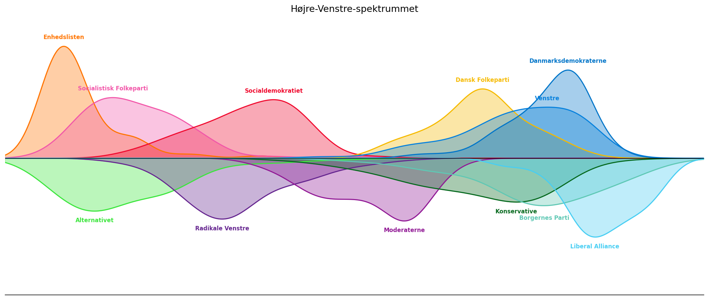

Så blev fødevarechecken godkendt af Folketinget og med udsigten til at sende penge direkte ud til (mere eller mindre) trængende vælgere besluttede statsministeren omgående at udskrive valg. Heldigvis var journalisterne klar, så ikke længe efter kunne man tage den tilbageværende Kandidattest hos DR og Altinget, som giver en nem måde at føle sig politisk oplyst på. Men den giver også et indblik i holdningerne hos de hundredevis af personer der i denne omgang kandidere til en plads i Folketinget, og hvorfor ikke udnytte det til lidt politisk analyse, som måske stadig er ment som en form som underholding, men med forhåbning om at det også bliver en analese mere oplysende end hvad Morten Messerschmidt putter i sin kødsovs.
Siden Den Franske Revolution har de politiske partier været opdelt på et højre-venstre kontinum, så det er nærliggende at prøve at placere kandidaterne på en enkelt akse. Der er dog sket en del siden syttenhundredetallet og én enkelt dimension viser sig måske at være lige det mindste for at udtrykke nuancerne mellem partierne, men det er et sted at starte. Siden den klassiske akse især har været bundet til (om)fordeling af goderne tager vi her udgangspunkt i de spørgsmål der har med økonomi og velfærd at gøre.1 Ved at projektere alle kandidaternes svar på ind den retning hvor der er størst variation får vi nedenstående overblik over partiernes placering.

Vi finder smukt Enhedslisten helt ude på venstrefløjen, Liberal Alliance der kæmper med snevejret ude på højrefløjen og Moderaterne, der har formået at lande lige midt i det hele. Nogle vil måske være overrasket over at finde Radikale længere mod venstre end Socialdemokratiet, mens andre længer har vidst at det var realiteten.Men, som nævnt, er 1 dimension lidt fattigt, når man nu f.eks. kan være meget enig økonomisk, men hade muslimer i vidt forskelligt omfang – vi har brug for nogle flere retninger.
Naturligvis er det ikke lige til at repræsentere de mange forskellige måder man kan svare på 25 spørgsmål på de sølle to dimensioner der er tilængelige på din computerskærm (eller telefon… nok telefon.), men vi kan gøre forsøget. Kortet nedenfor viser samtlige politikere, der har svaret på kandidattesten,2 men sådan at de ligger tæt på dem de er mest enige med. Og så kan man rigtig fornemme højrefløjens problem, når godt nok er ret enige på højre-venstre-skalaen, men i øvrigt har store interne forskelle (og flere statsministerkandidater end de har brug for).
I testen skal man angive hvor enig eller uenig man er i forskellige udsagn og det giver mulighed for at fedtspille lidt (og kun være lidt (u)enig), eller gå i den anden grøft og se stort på virkelighedens nuancer. Men hvordan gør de så i de forskellige partier? Overordnet kan vi se nedenfor, at mændene har tendens til at være mere ekstreme og oftere være helt (u)enig i deres svar, men i øvrigt så er det (naturligvis) yderfløjspartierne, der virkelig mener det de mener. I øvrigt kan vi også se at Liberale Alliance i den grad har en overrepræsentation af mænd og det kan man jo så mene hvad man vil om.
Med 25 spørgsmål og fire svarmuligheder er der 1.125.899.906.842.624 mulige svarkombinationer, men alligevel er det lykkedes både Zenia Stampe og Martin Lidegaard at mene fuldstændig det samme. Det må være dejligt at have så forstående kollegaer. Det er i øvrigt det samme for Stephanie Lose og Troels Lund Poulsen (altså ikke at det mener det samme som Zenia og Martin) samt Peter Skaarup og to andre fra Danmarkdemokraterne, som jeg aldrig har hørt om, men antageligvis har haft tid til at svare i fællesskab mens de alle sammen ventede på en bus et sted i Jylland. Ved forige valg havde Mette Frederiksen fået Nicolaj Wammen til at lave sine lekter, men i denne omgang (lige som sidst) har hun sprunget øvelsen helt over. Men alle kender hende jo også for checken.
Spørgsmål eller kommentarer, så send en mail